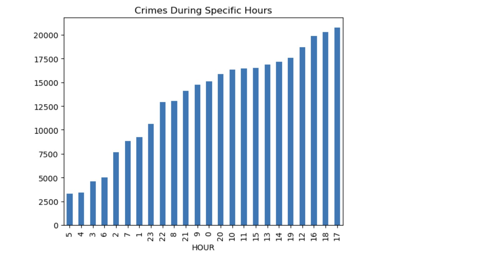

Analysis by answering few questions.
1.What are the most common crimes in terms of offence groups?
2. What are the Least common Offense groups?
3. What are the most common offense description?
4. What is the bottom or the Least offense description ?
5. In Which Year were the most crime commited?
6. Are there more crimes committed on specific days?
7. Are there more crimes during Specific Hour?
8. On what Days and during which hours are the most crimes commited?